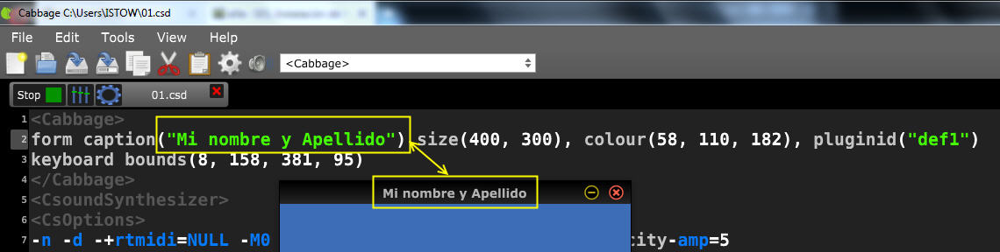
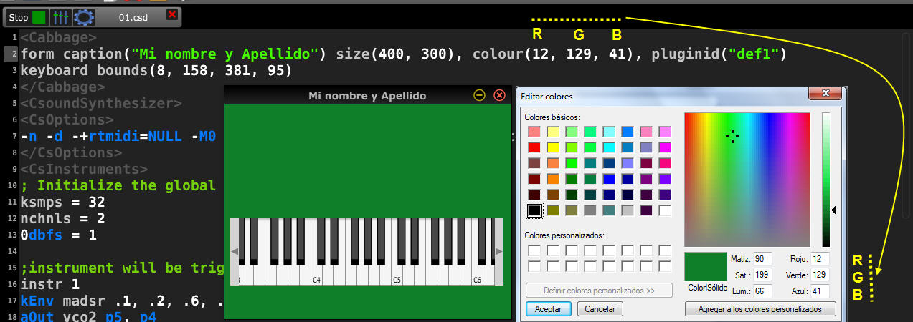
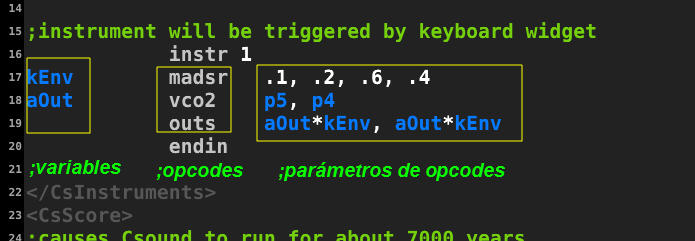

Herramientas
1. Host para VSTs: VST-Host
2. Controlador de audio para Windows: ASIO4ALL
3. Interfaz de programación para Csound: Cabbage-audio
1. Host para VSTs: VST-Host
2. Controlador de audio para Windows: ASIO4ALL
3. Interfaz de programación para Csound: Cabbage-audio
1. Descargar las herramientas necesarias e instalarlas en el computador de uso frecuente en casa. De ser un sistema operativo distinto al de Windows, buscar versiones similares.
2. Probar el funcionamiento de Csound-Cabbage:

3. Abrir cualquier ejemplo de sintetizador del Csound-Cabbage, exportarlos como VST y:
4. Abrir cualquier ejemplo de sintetizador del Csound-Cabbage, exportarlo en formato StandAlone.
5. Opcional: Abre cualquier ejemplo de sintetizador Csound-Cabbage y reprodúcelo en un terminal Android.
6. Crea un sintetizador, basado en el código por omisión, y realiza los siguientes cambios:



Obra publicada con Licencia Creative Commons Reconocimiento Compartir igual 4.0